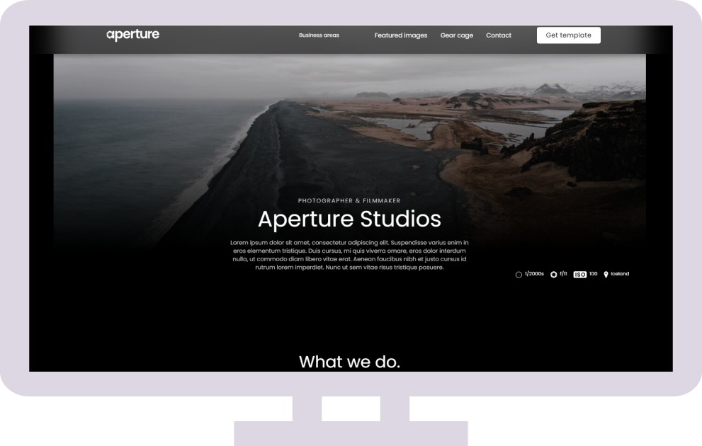
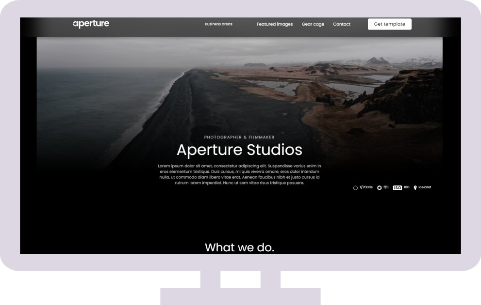
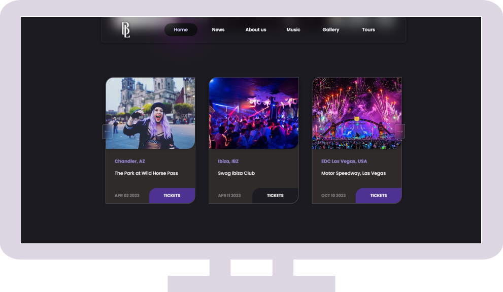
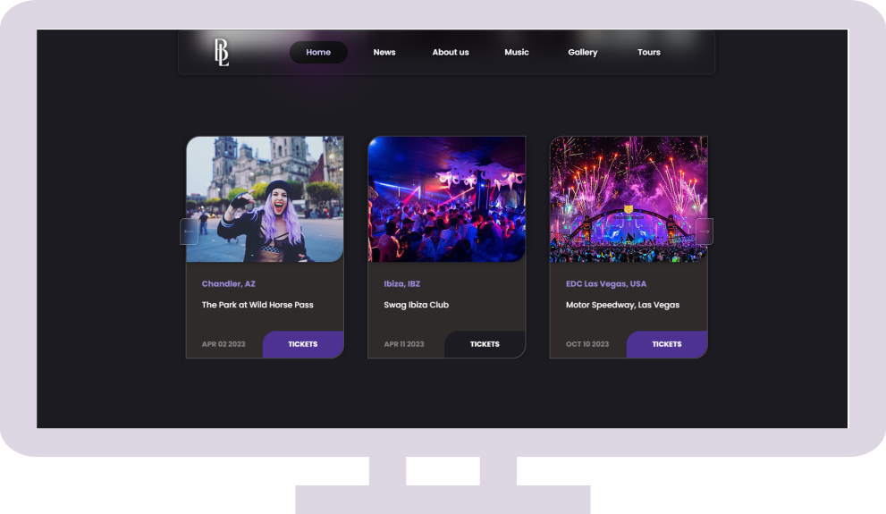
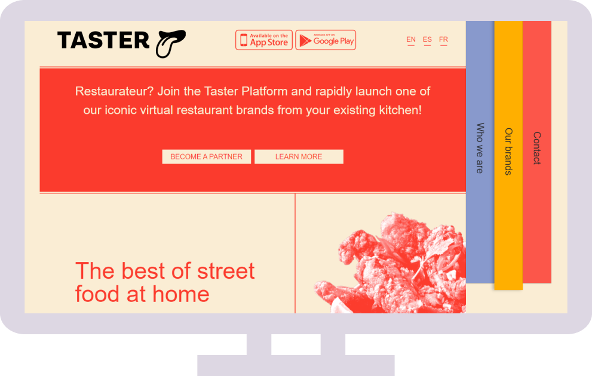
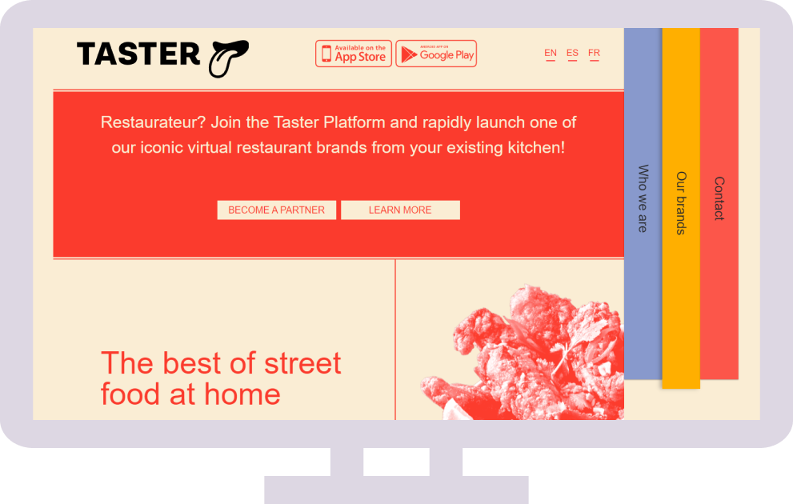
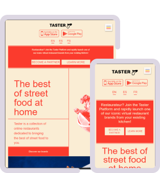
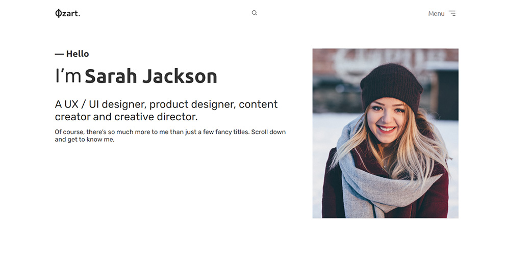
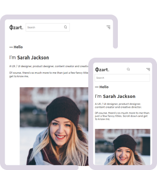
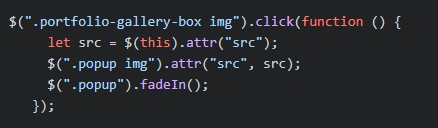

Вітаю!
UA

Привіт, я
Максим Іващенко
Frontend розробник
Дизайнер (Web, UI/UX, 3D, Interior)
// web-розробка Програміст, який має досвід створення web та мобільних додатків на HTML / CSS / JavaScript / React Native. // чистий web та ui/ux дизайн Досвід і почуття смаку в дизайні. Я працюю професійно в Figma / Adobe Photoshop / Illustrator / XD / Autodesk 3ds Max.


-
Aperture Studios
Фотограф та Відеооператор Це базовий макет сайту фотографа. Зроблена плавна анімація, підказуючі спливаючі елементи, що фокусують увагу на на головних деталях. Чорний мінімалістичний дизайн сайту дає можливість зосередитися на фото та проникнути в суть.Адаптив: Настільний / Планшет / Мобільний  Цей сайт є портфоліо фотографа та та відеооператора під назвою Aperture Studios.
 Цей сайт є портфоліо фотографа та та відеооператора під назвою Aperture Studios.1. Головна сторінка сайту містить інформацію про фотографа та відеооператора, а також опис робіт.
2. У шапці сайту є меню, яке дозволяє переходити до різних розділів, наприклад як «Сфери діяльності», «Вибрані зображення», «Спорядження», «Контакт».
3. Сайт також пропонує можливість завантажити шаблон.
4. У розділі «Що ми робимо» представлені сфери, в яких спеціалізуються фотограф і відеооператор, наприклад, фотографія продуктів, фотографія архітектури, фотографія дроном і фотографія дикої природи.
5. На сайті також є розділи з фотодемонстраціями, інформацією про обладнання, що використовується, інформацією про минулих клієнтів, можливістю зв'язатися з фотографом та відеооператором.
6. У фундаменті сайту розміщено логотип, навігаційні посилання, форму підписки на розсилку, інформацію про автора сайту.
 JavaScript
JavaScript
Скрипт містить кілька функцій, які виконують різні дії при прокручуванні сторінки і зміні розмірів вікна браузера.
1. Функція «Header bg parallax» відповідає за створення ефекту паралакса для фону заголовка. Він вибирає всі елементи з класом "main-container__bg" та під час прокручування сторінки змінює їх фонове положення в залежності від швидкості, зазначеної в атрибуті "data-speed".
2. Функція "Header on top" відповідає за зміну положення заголовка при прокручуванні сторінки. Якщо прокрутка досягає або перевищує 100 пікселів, заголовок переміщується вгору, а анімація вимикається. Якщо прокрутка менше 100 пікселів, заголовок повертається на стартове положення та анімація вмикається. Це відбувається лише тоді, коли ширина екрана перевищує 768 пікселів.
3. Функція "AOS OFF MOBILE" відповідає за вимкнення німування на мобільних пристроях. Вона виділяє всі елементи з атрибутом "data-aos" і при зміні розміру вікна браузера прибирає цей атрибут для елементів з шириною екрана менше або дорівнює 768 пікселів. Коли ширина екрану перевищує 768 пікселів, атрибути "data-aos", "data-aos-offset" і "data-aos-easing" відновлюються для елементів. Таким чином, цей скрипт використовується для створення ефекту паралакса для фону заголовка, зміни положення заголовка при прокручуванні і вимкнення анімації на мобільних пристроях.
git js... -
Bright Light
Співачка / Dj / Музичний продюсер Сайт містить різні розділи, новини, інформацію про Bright Lights (співачку та продюсера), останні треки, галерею та інформацію про майбутні події. Кожен розділ має свої унікальні елементи, такі як зображення, текстовий опис та посилання. Загалом, сайт-портфоліо покликаний продемонструвати творчість та досягнення Bright Lights, а також надати інформацію та розвагу відвідувачам сайту.Адаптив: Настільний / Планшет / Мобільний  Цей сайт є музичним сайтом виконавця під назвою "Bright Lights".
 Цей сайт є музичним сайтом виконавця під назвою "Bright Lights".1. Сайт має наступну структуру: Шапка містить логотип художника, головне меню з посиланнями на розділи сайту (Головна, Новини, Про нас, Музика, Галерея, Гастролі), а також блок з плеєром для прослуховування музики.
2. Основний контент (main) сайту розділений на кілька блоків: Блок новин (News), який містить картки з новинами та можливість прочитати деталі. (About Us) блок з описом виконавця та його досягнень. Блок з цитатою та посиланням на інтерв'ю з артистом. (Latest tracks) блок, що містить обкладинку треку, плеєр та плейлист з посиланнями на треки. Блок з галереєю, що містить зображення артиста. Блок з найближчими подіями та турами, що включає картки з інформацією про події та посиланнями на придбання квитків.
3. Сайт має адаптивний дизайн і пропонує зручну навігацію по розділах.
 JavaScript
JavaScript
Цей сайт містить наступні JavaScript елементи:
1. Ініціалізуємо бібліотеку AOS (Animate On Scroll) викликавши функцію AOS.init(). Ця бібліотека дозволяє додавати анімацію до елементів при прокручуванні сторінки.
2. Функціональність мобільного плеєра. Використовуючи JavaScript, відтворення аудіо та призупинення, відображення часу та прогресу відтворення аудіо на мобільному плеєрі.
3. Реалізація функціоналу прокрутки сторінок при натисканні на пункти меню, сторінка плавно прокручується до відповідного розділу.
4. Реалізація ефекту паралакса на сайті При прокручуванні сторінки фон шапки сайту рухається зі швидкістю, що відрізняється ніж швидкість прокрутки сторінки, створюючи ефект глибини.
5. Реалізація плавної прокрутки до шапки при завантаженні сторінки. При завантаженні сторінки відбувається плавна прокрутка сторінка плавно прокручується до заголовка, щоб щоб користувач міг одразу побачити вміст сторінки.
6. Реалізація функціоналу відкриття та закриття контейнера з описом новини при натисканні на кнопку "Детальніше". При натисканні на кнопку "Детальніше" контейнер з описом новини відкривається, та при повторному натисканні - закривається.
7. Реалізація функціоналу аудіоплеєра. Аудіоплеєр з функціями управління відтворенням, регулюванням гучностіта відображення прогресу відтворення.
8. Реалізація функціональності спливаючих вікон. При натисканні на текстову іконку відкривається спливаюче вікно з додатковою інформацією, яке можна закрити натиснувши за межами вікна.
9. Відтворення відео за допомогою YouTube API та відображення відео в модальному вікні. При натисканні на відео відкривається модальне вікно, в якому відтворюється відео за допомогою API YouTube.
10. Реалізація галереї зображень з можливістю збільшення зображення при натисканні. Коли ви натискаєте на зображення в галереї, воно збільшується для більш детального перегляду.
11. За допомогою Swiper створюється Slide з можливістю навігації та перемикання зображень. Swiper дозволяє створювати адаптивні слайди з різноманітними налаштуваннями та ефектами переходу.
12. Додає ефект тіні до перемикача, якщо цей прапорець позначено. Перемикач додає яскравий ефект тіні до фону слайда.
13. Використання Splide для створення слайдера події з адаптивним відображенням на різних пристроях. Splide дозволяє створювати слайдери подій, які можна адаптувати для різних пристроїв та роздільної здатності екрану.
14. Різноманітні функції для керування видимістю та поведінкою елементів сторінки. Ці функції дозволяють керувати відображенням і поведінкою елементів на основі дій користувача або стану сторінки.
Це лише загальний опис елементів JavaScript на цьому сайті.
git js... -
Taster
Платформа та швидкий старт рестораторів Цей сайт є веб-сторінкою про компанію, пов'язану з ресторанним бізнесом. Сайт містить шапку з логотипом та навігаційним меню, основний контент з такими розділами, як "Шапка", "Про компанію", "Статистика" та "Більше", а також футер з додатковими посиланнями та інформацією про автора сайту. Сторінка має адаптивний дизайн та пропонує зручну навігацію по розділам.Адаптив: Настільний / Планшет / Мобільний  Цей сайт є веб-сторінкою, пов'язаною з ресторанною індустрією.
 Цей сайт є веб-сторінкою, пов'язаною з ресторанною індустрією.1. Сайт містить шапку з логотипом та навігацією меню, основний зміст з такими розділами, як "Заголовок", "Відкрий для себе", "Статистика" та "Більше", та нижній колонтитул з додатковими посиланнями.
2. Сайт пропонує інформацію про компанію, запрошує рестораторів приєднатися до Taster і запускати віртуальні ресторани на базі існуючої кухні.
3. Також підкреслюється, що Taster - це колекція онлайн-ресторанів, які присвячені наданню найкращих страв вуличної їжі.
4. Веб-сайт має адаптивний дизайн та пропонує зручну навігацію по розділах.
 JavaScriptКод виконує наступні функції:
1. AOS.init(); - ініціалізує бібліотеку AOS (Animate On Scroll), яка анімацію до елементів при прокручуванні сторінки.
2. Меню бургера: Натискання на елемент з класом "mobile div" додає/видаляє класи "active", "open" і "show" з відповідних елементів з класами "mobileDiv", "mobileNav" і "mobileNavUl". Це дозволяє меню бургер відображатися і ховатися при натисканні. При кліку за межами області з класом "mobile", класи "active", "open" і "show" елементів з класами "mobileDiv", "mobileNav" і "mobileNavUl" видаляються. Це дозволяє приховати меню меню бургера ховатися при кліці за межами його області. Для кожного елемента списку з класом "mobile ul li", задається затримка анімації за допомогою властивість "animationDelay".
3. accordion: Отримує всі елементи з класом "accordion" і додає обробник події "click" для для кожного елемента. Коли елемент акордеона натискається, він перемикає "активний" клас та змінює стиль відображення наступного елемента (панелі). Якщо стиль відображення встановлено як "flex", він змінюється на "none", і навпаки. Цей код відповідає за меню бургер та акордеон на веб-сторінці.
git js... -
Ozart
Портфоліо UX/UI дизайнера Цей сайт є портфоліо UX/UI дизайнера, продуктового дизайнера, творця контенту та креативного директора. Сайт містить розділи, в яких представлена інформація про дизайнерку, її навички та досвід. На головній сторінці є вітальна зона з фотографією дизайнерки та коротким описом її навичок.Адаптив: Настільний / Планшет / Мобільний Сайт описується наступним чином:
Сайт описується наступним чином:
1. Шапка сайту: Логотип, який є посиланням на головну сторінку. Кнопка пошуку, при натисканні на яку відкриває поле для введення запиту. Навігаційне меню, яке містить розділи "Головна", "Про мене", "Подарунки" та "Контакти".
2. Основна частина сайту: Шапка сайту що містить привітання та інформацію про дизайнера. Фотографія дизайнера.
3. Соціальні мережі: Іконки для доступу до профілів дизайнера в соціальних мережах.
4. Розділ "Про мене": Коротке відео про дизайнера.
5. Розділ "Що я роблю": Блок, що описує три сфери діяльності дизайнера: "Ui & UX Дизайн", "Графічний дизайн" та "Веб-розробка".
6. Портфоліо: Фільтри для вибору категорії роботи. Галерея із зображеннями проектів.
7. Розділ "Відгуки клієнтів": Замовник відгук про роботу дизайнера.
8. Розділ "Зв'язатися з нами": Заголовок та опис, що заохочує зв'язатися з дизайнером. Кнопка "Зв'язатися" для переходу до контактної форми. Соціальні мережі дизайнера.
9. Розділ "Мій блог": Назва розділу. Запис у блозі картки з датою, кількістю коментарів, вподобань, автором та коротким описом.
10. Нижній колонтитул: Інформація про дизайнера та як з ним зв'язатися. Копірайт і посилання на автора шаблону.
 JavaScriptКод, який виконує різні дії на веб-сторінці. Ось його пояснення:
1. `$(".popup").css ("display", "none");` - Встановлює початкове значення властивості CSS `display` для елемента з класом "popup" як "none", що спочатку приховує його.
2. Обробник кліків на кнопках меню бургерів: Додає метод обробник події кліку на кнопці меню бургерів. При натисканні кнопки перемикає "активний" клас для кнопки та меню, що дозволяє анімувати відображення та приховування меню.

3. Обробник кліку на зображенні в галереї портфоліо: Додає обробник кліку на зображенні всередині елемента з класом "portfolio-gallery-box". При натисканні на зображення, отримує його шлях до джерела і встановлює його в атрибут `src` атрибуту зображення всередині елемента з класом "popup". Потім за допомогою методу `fadeIn()` плавно відображає елемент з класом класом "popup".
4. Обробник кліку на кнопці закриття спливаючого вікна: $(".close").click(function () { $(".popup").fadeOut(); }); Додає обробник кліку до елементу з класом "close". При натисканні на кнопку закриття за допомогою методу `fadeOut()` плавно приховує елемент, з класом "popup".

5. Обробник для кліку на області навколо щоб закрити спливаюче вікно: $(".popup-wrap").click(function () { $(".popup").fadeOut(); }); Додає обробник кліку до елементу з класом "popup-wrap". При натисканні на область навколо спливаючого вікна, за допомогою методу `fadeOut()`, плавно ховає елемент з класом "popup".

6. Функція `toggleSearchInput()` для перемикання відображення поля пошуку: Отримує посилання на на елементи з класами "search_input" та "search_img". При виклику функції перевіряється поточне значення властивості CSS `display` для поля пошуку. Якщо воно дорівнює "block", вона приховує поле пошуку і видаляє клас "clicked" з елемента з класом "search_img". Якщо значення не дорівнює "block", то відображається поле пошуку і додається клас "clicked" до елемента з класом "search_img".

7. Обробник кліку за межами поля пошуку, щоб приховати його: Додає до документа обробник клацання. При натисканні поза полем пошуку і елемента з класом "search_img", ховає поле пошуку поле пошуку і видаляє клас "clicked" з елемента з класом "search_img".

Цей код відповідає за функціональність спливаючого вікна, меню бургерів, галереї портфоліо та поля пошуку на веб-сторінці.
git js... -
Minimal Player
UX/UI React Native Додаток Цей плеєр є компонентом React Native для для відтворення аудіофайлів. Загалом, цей плеєр є не тільки потужний інструмент для відтворення аудіофайлів, але й справжнім витвором мистецтва, який привертає увагу та створює приємну атмосферу для насолоди музикою.

 Цей плеєр - справжній витвір мистецтва!
Цей плеєр - справжній витвір мистецтва!
1. Він має красивий та елегантний дизайн, який привертає погляд і створює приємну атмосферу.
2. Він має всі необхідні функції для повного контролю над відтворенням аудіо.
3. Інтерфейс плеєра включає стильні кнопки керування, такі як відтворення, перемотування, пауза та повтор.
4. Вони розміщені таким чином, щоб забезпечити зручність використання та зручність навігації.
5. Плеєр використовує AudioContext, який дозволяє отримати доступ до інформації про поточний аудіофайл та керування відтворенням функціями відтворення.
6. Це забезпечує гнучкість і потужність в управлінні аудиофайлами.
7. Особливістю цього плеєра єможливість пересуватися по треку за допомогою повзунка.
8. Це дає змогу точно вибрати позицію відтворення та насолоджуватися музикою в потрібний момент.
9. Інформація про поточний трек відображається чітко та стильно.
10. Ви можете бачити назву файлу та формат аудіо тож ви завжди будете в курсі того, що відтворюється.
11. Всі кнопки управління зроблені з використанням різних іконок з пакету expo-vector-icons, що надає їм унікального та привабливого вигляду.
12. Плеєр також має гарні анімації, які створюють ефекти, коли ви натискаєте кнопки відтворення.
13. Це додає динамічності та інтерактивності у використання плеєра.
14. Градієнтне фонове зображення, створене за допомогою компонента LinearGradient, надає програвачу додаткової естетичної привабливості.
15. Поєднання різних відтінків створює привабливий візуальний ефект.
Максим Іващенко
Frontend розробник
Дизайнер
Я пристрасний веб-розробник з досвідом розробки на JavaScript, Css, Html та React.js. Дизайнер з дуже тонким смаком і розумінням деталей. Я постійно прагну до досконалості і прагну досягти високих результатів у своїй роботі. Я добре розумію користувацький досвід і можу створювати привабливі та інтуїтивно зрозумілі дизайни. Мої навички включають створення адаптивних веб-сайтів, пошукову оптимізацію і багато іншого. Я також маю досвід роботи в команді і можу ефективно співпрацювати з іншими розробниками та дизайнерами. Я завжди готовий до нових викликів і прагну постійно вчитися та розвивати свої навички. Впевнений, що мої знання та досвід дозволять мені успішно виконувати завдання веб-розробника та дизайнера.
+38 066 639 28 39
Україна, Кривий Ріг


Навички
Використовую у фронтенді:
- JavaScript
- CSS
- HTML
- React JS / Native
Використовую в дизайні:
- Figma
- Adobe Photoshop
- Adobe Illustrator
- Adobe XD
- Autodesk 3ds Max
- Роблю адаптивні та кросбраузерні верстки, намагаюся використовувати найкращі технології та завжди вивчати нові.
- Активно цікавлюсь штучним інтелектом та широко використовую його в проектах.
- Володію англійською мовою на середньому рівні, читаю / слухаю / письмово.
- Розробка фірмового стилю, логотипу.
- Знання графічних програм.
- Креативність, відчуття кольору та стилю.
- Активно слідкую за трендами в дизайні.
- Точність, старанність, увага до деталей.
Освіта
2005-2011Відкритий міжнародний університет розвитку людини "Україна".
2010-2011Міжрегіональна академія бізнесу і права імені Н. Кручиніної Сертифікат за успішне проходження повного курсу навчання за програмою "Веб-дизайн".
Досвід
Фріланс веб-розробник (травень - жовтень 2023).Розроблено аудіоплеєр, дизайн плеєра з використанням Adobe Photoshop / Figma / React Native.
Розробляв веб-сайти з використанням Html / Css / JavaScript та JS бібліотек.